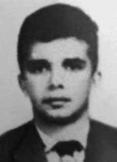

Nelson
Lima
Piauhy
Dourado
CIRCUNSTÂNCIAS DA MORTE
O relatório Arroyo descreve que Nelson morreu em 2 de janeiro de 1974, após ter sido atingido por tiros de militares enquanto buscava alimentos. Tanto o Relatório do Ministério da Marinha de 1993 iv quanto o Relatório do CIE, Ministério do Exército v registram sua morte na mesma data. Segundo o livro Dossiê Ditadura, os moradores de São Domingos do Araguaia (PA), Luiz Martins dos Santos e Zulmira Pereira Neres, relataram ao MPF, em 2001, terem ouvido de um companheiro que Nelson chegou ferido à base da Bacaba e foi submetido a uma cirurgia, mas morreu em seguida. O camponês José da Luz Filho, também testemunhou que Nelson foi levado à base, mas acrescentou que sua esposa, Jana, também teria sido presa e conduzida ao local no mesmo episódio. Ainda sobre o possível paradeiro de Nelson pela base, o livro da CEMDP traz o relato de Pedro Matos do Nascimento, o “Pedro Mariveti”, que afirma ter ouvido de Babão, ex-guia do Exército, que o guerrilheiro estaria enterrado na cabeceira da pista de pouso da Bacaba. Já outro depoimento elencado pelo relatório da CEMDP aponta para o castanhal BrasilEspanha como o local de sepultara de Nelson. Por fim, Raimundo Nonato dos Santos informou ao MPF, no seio da investigação mencionada, que Nelson foi morto em uma operação cujo guia era Zé Catingueiro e comandante era o capitão Rodrigues.
The Arroyo report describes that Nelson died on January 2, 1974, after being shot by military personnel while searching for food. Both the 1993 Ministry of the Navy Report iv and the CIE Report, Ministry of the Army v record his death on the same date. According to the book Dossiê Ditadura, residents of São Domingos do Araguaia (PA), Luiz Martins dos Santos and Zulmira Pereira Neres, reported to the MPF, in 2001, that they had heard from a companion that Nelson arrived at the Bacaba base injured and underwent surgery, but later died. Peasant José da Luz Filho also testified that Nelson was taken to the base, but added that his wife, Jana, had also been arrested and taken to the location in the same episode. Still on Nelson's possible whereabouts at the base, the CEMDP book contains the report of Pedro Matos do Nascimento, known as “Pedro Mariveti”, who claims to have heard from Babão, a former Army guide, that the guerrilla fighter was buried at the head of the Bacaba airstrip. Another statement listed in the CEMDP report points to the BrasilEspanha chestnut grove as Nelson's burial place. Finally, Raimundo Nonato dos Santos informed the MPF, as part of the aforementioned investigation, that Nelson was killed in an operation whose guide was Zé Catingueiro and commander was Captain Rodrigues.
El informe Arroyo describe que Nelson murió el 2 de enero de 1974, luego de recibir un disparo de personal militar mientras buscaba comida. Tanto el Informe iv del Ministerio de Marina de 1993 como el Informe CIE del Ministerio del Ejército v registran su muerte en la misma fecha. Según el libro Dossiê Ditadura, los residentes de São Domingos do Araguaia (PA), Luiz Martins dos Santos y Zulmira Pereira Neres, informaron al MPF, en 2001, que habían escuchado por un compañero que Nelson llegó a la base de Bacaba herido y fue operado, pero luego murió. El campesino José da Luz Filho también declaró que Nelson fue llevado a la base, pero agregó que su esposa, Jana, también fue arrestada y trasladada al lugar en el mismo episodio. Aún sobre el posible paradero de Nelson en la base, el libro del CEMDP contiene el informe de Pedro Matos do Nascimento, conocido como “Pedro Mariveti”, quien afirma haber escuchado por Babão, ex guía del Ejército, que el guerrillero fue enterrado en la cabecera de la pista de aterrizaje de Bacaba. Otra declaración recogida en el informe del CEMDP señala el castañar de BrasilEspanha como lugar de enterramiento de Nelson. Finalmente, Raimundo Nonato dos Santos informó al MPF, en el marco de la investigación mencionada, que Nelson fue asesinado en una operación cuyo guía era Zé Catingueiro y el comandante era el capitán Rodrigues.